Diseño paramétrico y despiece de
muebles de melamina en SketchUp.
SmartModule es una extensión para SketchUp que diseña muebles de melamina de forma paramétrica y genera despiece, tapacantos, herrajes, planos de armado y presupuesto en PDF.
Esta página explica qué problema resuelve en el proceso de trabajo, qué capacidades técnicas tiene y cómo opera paso a paso desde el diseño 3D hasta la entrega de planos en el taller.
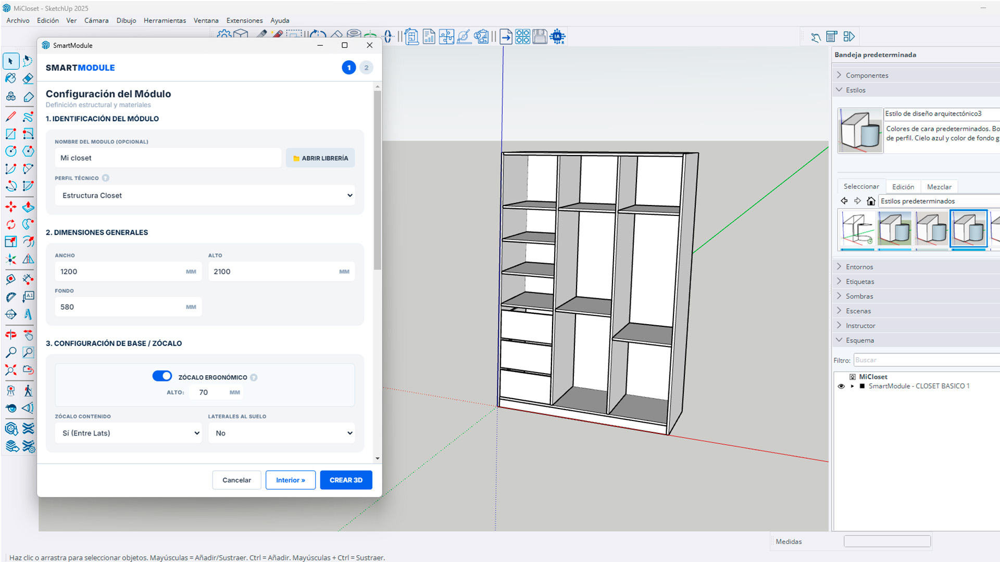
1. ¿Qué es SmartModule?
SmartModule es una extensión técnica para Trimble SketchUp desarrollada por Melamina Ecuador. No es un programa externo ni una biblioteca de bloques estáticos: es un núcleo de cálculo paramétrico que vive dentro de SketchUp.
El problema del diseño tradicional en SketchUp
Diseñar muebles con grupos convencionales o componentes dinámicos tiene un límite claro: al escalar grupos normales se deforman los espesores y las texturas, mientras que los componentes dinámicos solo cambian de tamaño pero no generan información de fabricación. Al final, el carpintero sigue obligado a pasar horas calculando despieces a mano, restando milímetros de tapacantos y contando herrajes en una libreta, lo que suele provocar errores en el taller.
La solución que aporta SmartModule
SmartModule trata cada mueble como un conjunto de piezas de carpintería real. Si cambias el ancho, alto o fondo, el sistema no deforma el dibujo: recalcula matemáticamente cada lateral, piso, amarre, frente y fondo conservando el espesor exacto de la melamina y las holguras de ensamble. Además, automatiza toda la información técnica que el taller necesita para fabricar.
2. ¿Qué hace SmartModule?
Cubre todas las etapas que existen entre tomar las medidas en la obra y entregar los tableros cortados en el banco de armado:
Levanta el entorno en obra
Con la suite Room Builder, traza los muros del proyecto en 2D con cotas interiores reales, soporta esquinas en falsa escuadra, levanta las paredes en 3D en un clic y perfora vanos de puertas y ventanas mediante sustracciones booleanas exactas.
Módulo: Room Builder 2D/3DGenera muebles paramétricos reales
Construye cualquier tipología de mueble a medida exacta con espesores 100% libres (sin calibres fijos). Permite configurar zócalos, fondos ranurados o atornillados, ensambles de caja y subdividir el interior con puertas, cajoneras o esquineros.
Módulo: Core Engine (Paso 1 y Paso 2)Modela piezas especiales sin límites
Para lo que no sea un módulo estándar, el subsistema Free Design permite modelar a mano alzada con Smart Extrude (conservando el espesor de placa) e inyectar cajones en U bajo lavabo, celosías, especieros y puertas de espejo embutidas.
Módulo: Free Design & Smart ExtrudeAplica tapacantos y descuenta en corte
El motor analiza la geometría en 3D: reconoce qué cantos chocan contra paredes u otros tableros y cuáles quedan al aire. Aplica el canto solo en los bordes vistos y resta los milímetros del canto en la medida de corte para que la pieza cortada quede exacta.
Motor: Banding Detector & RulesCalcula herrajes automáticamente
Calcula la cantidad y tipo de bisagras (rectas, semicodo o codo con entrada a 100mm) según la altura de cada puerta, el número de correderas por cajón, pistones a gas, tiradores y el cómputo exacto de tornillería Spax (4x16 y 4x50).
Motor: Layout Hardware & Fast CountGenera la documentación de fabricación
Con un clic produce: la lista de despiece (medidas brutas de corte y medidas finales netas), optimización de corte sobre tableros en 2D, hojas de armado con vistas en Rayos X y cotas 3D para el operario, y el presupuesto comercial formal en PDF.
Módulo: Reportes, Planos y Optimizador3. ¿Cómo funciona SmartModule paso a paso?
Así es como interactúa el usuario con SmartModule para llevar un proyecto desde la idea hasta el corte:
Trazado del espacio real con Room Builder
Abres la paleta 2D dentro de SketchUp e ingresas las medidas tomadas en obra. Puedes fijar longitudes y ángulos con el teclado para reflejar paredes que no están a 90°. Un clic levanta los muros sólidos en 3D y la herramienta de aberturas perfora las puertas y ventanas exactas.
- Trazado ortogonal y falsa escuadra en grados.
- Muros 3D automáticos con espesor y piso independiente.
- Perforación booleana de vanos con alféizar y altura.
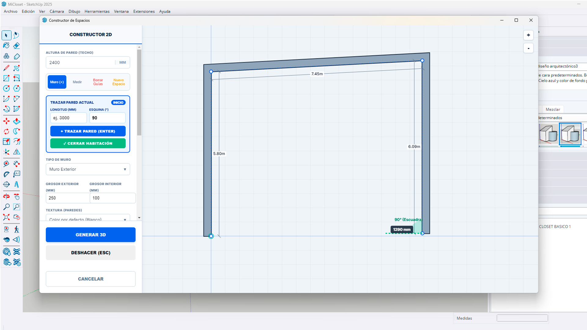
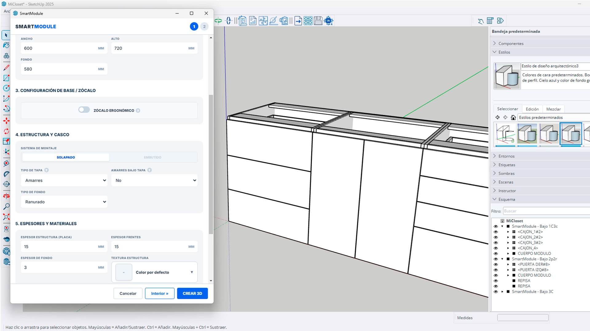
Definición de dimensiones, ensambles y espesores
Abres "Crear Módulo" e introduces las medidas generales (ancho, alto, fondo). Configuras los espesores que vas a usar (cualquier calibre en milímetros), el sistema de montaje (solapado o embutido), el tipo de tapa (amarres o completa), el zócalo y el tipo de fondo (ranurado, atornillado o clavado).
- Espesores libres sin restricciones comerciales fijas.
- Ensambles de caja: techo/piso entre o sobre laterales, o a inglete 45°.
- Fondos ranurados con profundidad y holguras al milímetro.
Subdivisión visual con el Canvas Interactivo
En el Paso 2 del diálogo aparece el interior del mueble en un canvas interactivo. Seleccionas cualquier espacio libre y lo divides vertical u horizontalmente. Asignas qué va en cada hueco: un espacio vacío, una puerta simple, una puerta doble, vitrinas de aluminio con vidrio, o una cajonera con alturas individuales por frente y caja.
- Subdivisión jerárquica con parantes y repisas estructurales.
- Control de puertas batientes, basculantes y vitrinas de vidrio.
- Cajoneras con gola L superior y tabla de medidas por cajón.
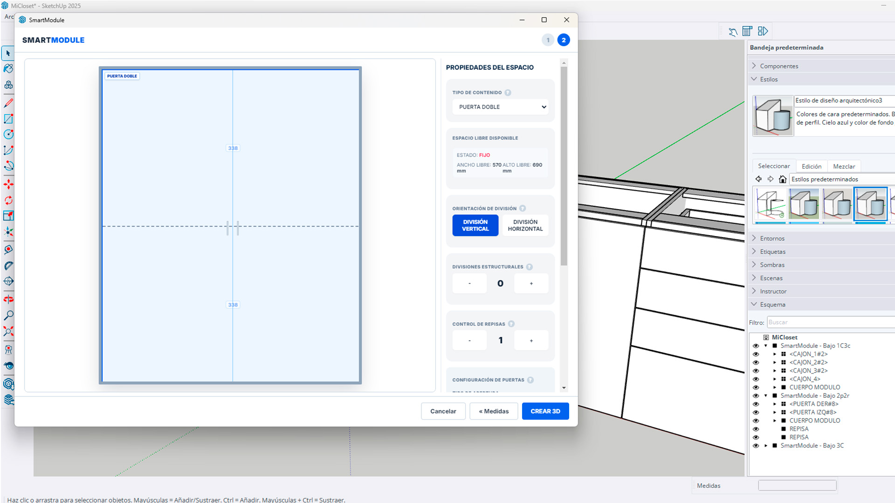
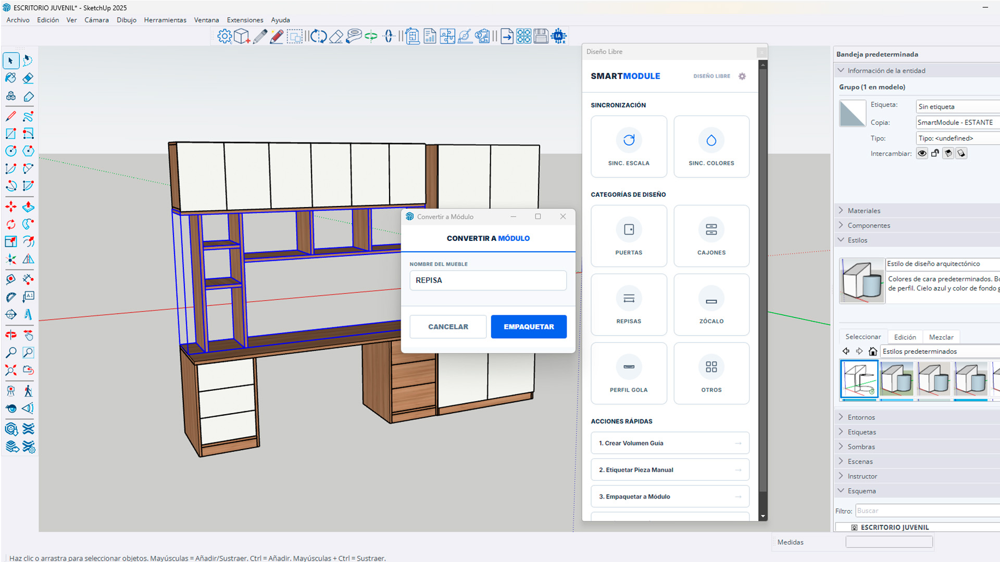
Piezas personalizadas con Free Design
Si el proyecto exige una pieza fuera de norma, usas la paleta de Free Design. Con Smart Extrude modelas caras asegurando siempre el calibre de tablero (con opción de extrusión inversa sin perder el plano de referencia). Sobre cualquier cara puedes inyectar cajones en U bajo fregadero, celosías de listones o puertas de espejo enmarcadas.
- Smart Extrude bloquea el espesor de la placa en el modelado.
- Inyección de cajones U para sifones y celosías de listones.
- Envolvente para transformar piezas libres en módulos oficiales.
La ingeniería que SmartModule calcula en segundo plano
Tú no tienes que revisar canto por canto ni contar herrajes en una calculadora. Cada vez que generas o modificas un mueble:
Canteado por Colisión 3D
Detecta caras en contacto y caras expuestas, aplica canto delgado o grueso y resta el espesor en la medida de corte.
Conteo de Herrajes
Determina el número de bisagras por puerta según su altura (2 a 5 cazoletas), correderas por cajón y tornillos Spax exactos.
Orientación de Veta
Calcula el eje largo y ancho de cada tablero para que los despieces respeten el sentido natural de la textura.
4. ¿Qué documentación y resultados entrega SmartModule?
SmartModule divide sus salidas en dos áreas esenciales: la información técnica de alta precisión para fabricar en el taller, y las herramientas visuales y comerciales para cerrar el trato con el cliente:
A. Para el Taller • Fabricación y Corte
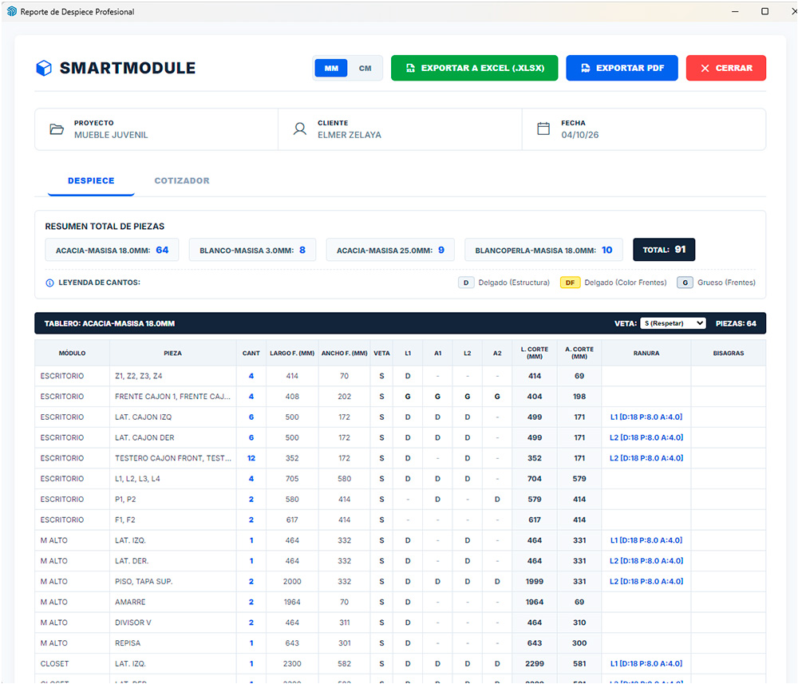
Despiece Profesional
Lista de corte con medidas brutas (descuento de cantos aplicado) y terminadas, especificación de ranuras CNC, sentido de veta y cálculo de bisagras por puerta.
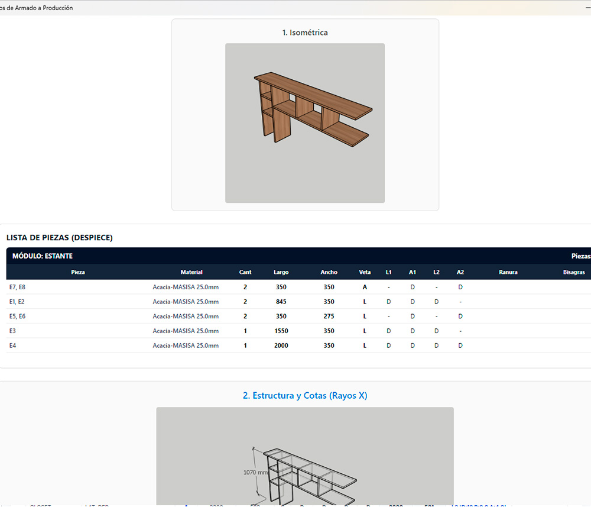
Planos Técnicos en 7 Vistas
Aísla cada mueble y genera una hoja técnica con vista isométrica, vista en Rayos X con cotas 3D automáticas (ancho, fondo, alto) y 5 vistas ortogonales para el armador.
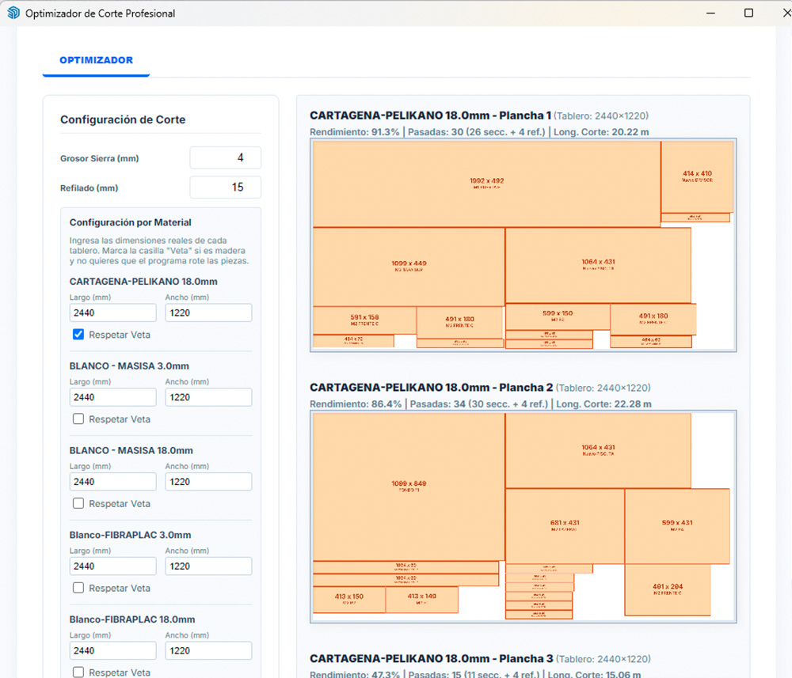
Optimizador de Corte en Tableros
Diagramas de corte sobre tableros comerciales con algoritmo de guillotina 2D. Respeta veta, grosor de disco y refilado perimetral para reducir el desperdicio.
B. Para el Cliente • Presentación Visual y Cierre de Venta
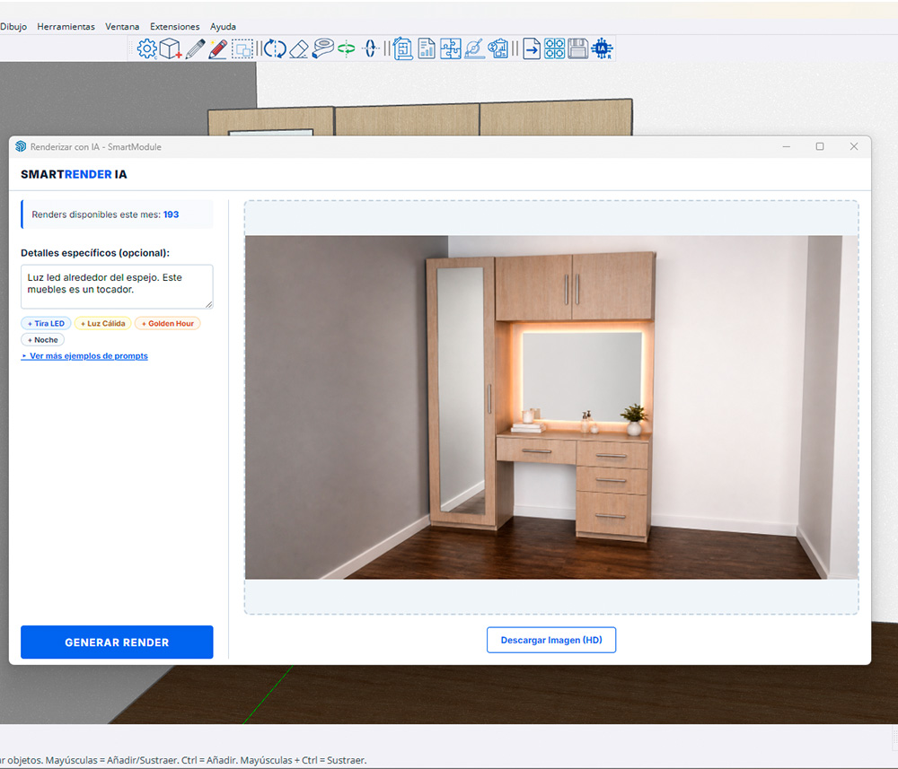
Render IA Integrado
Transforma la vista de tu modelo en una imagen fotorrealista con iluminación de estudio, texturas reales y acabados profesionales sin programas externos.
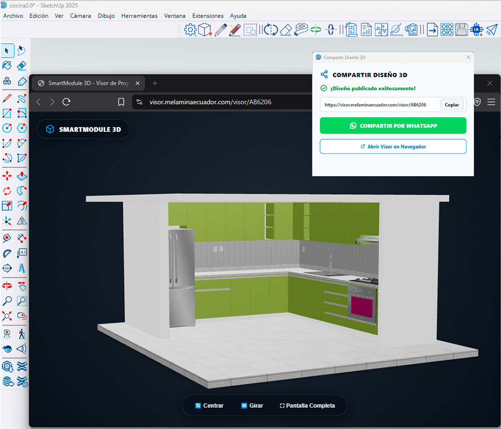
Visor 3D Interactivo
Genera con un clic un enlace web para compartir por WhatsApp. Tu cliente rota en 360°, hace zoom y explora el proyecto en 3D desde su celular o PC sin instalar nada, con soporte de Realidad Aumentada (AR).
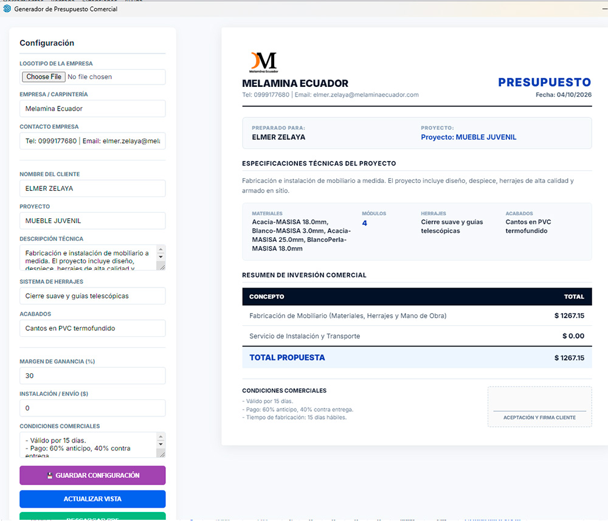
Presupuesto Formal
Propuesta comercial completa en PDF con logo, costos exactos de tableros, tapacantos, herrajes, margen de ganancia, servicio de instalación y firma.
Preguntas frecuentes sobre SmartModule
¿Qué es SmartModule?
SmartModule es una extensión para Trimble SketchUp, desarrollada por Melamina Ecuador, que diseña muebles de forma paramétrica y genera automáticamente la información de fabricación: despiece, tapacantos, herrajes, planos de armado y presupuesto.
¿Qué diferencia hay entre SmartModule y los componentes dinámicos de SketchUp?
Los componentes dinámicos solo cambian de tamaño y no generan datos de fabricación. SmartModule recalcula cada pieza conservando el espesor exacto de la melamina y las holguras de ensamble, y produce listas de corte y herrajes.
¿SmartModule calcula el despiece y los tapacantos?
Sí. Detecta en 3D qué cantos quedan expuestos, aplica el tapacanto solo en esos bordes y resta su espesor de la medida de corte. El despiece se exporta a Excel (.xlsx) y PDF.
¿Qué herrajes calcula automáticamente?
Bisagras según la altura de cada puerta (de 2 a 5 cazoletas), correderas por cajón, pistones a gas, tiradores y tornillos Spax 4x16 y 4x50.
¿Puedo mostrar el diseño al cliente sin que instale nada?
Sí. SmartModule genera un enlace web con visor 3D interactivo (rotación 360° y realidad aumentada) que se comparte por WhatsApp. También genera renders con IA y un presupuesto formal en PDF.
¿Dónde compro la licencia de SmartModule?
En melaminaecuador.com o escribiendo por WhatsApp al +593 99 917 7680.